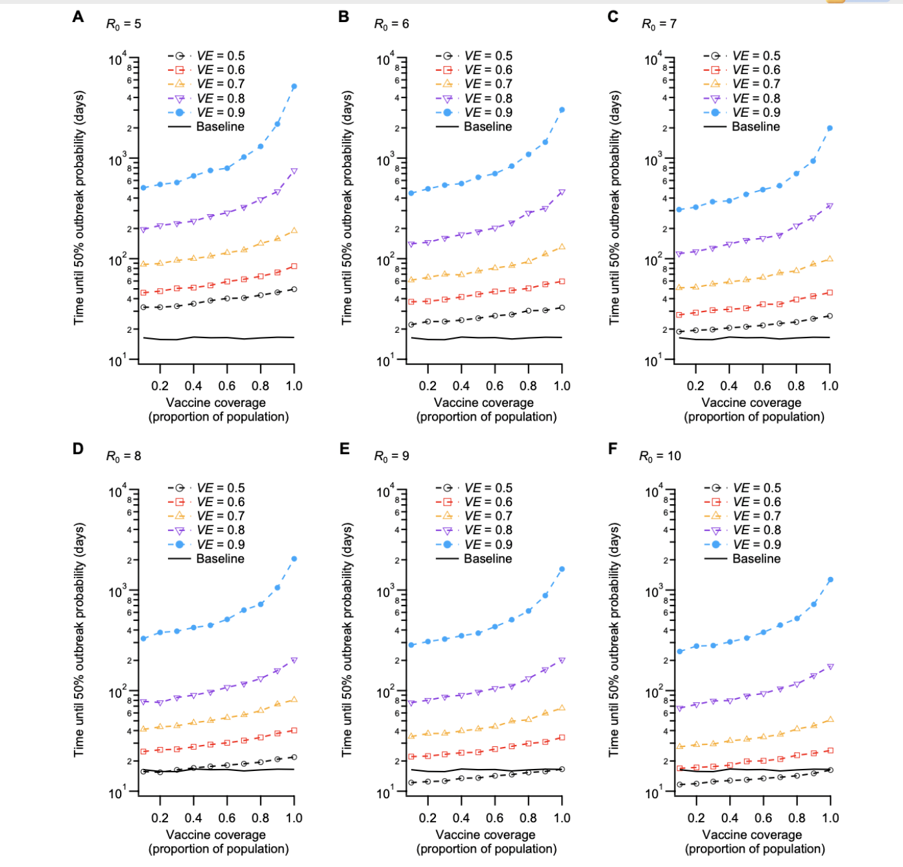

Problem description
Under the Delta variant, how do vaccine efficacy (VE) and coverage, alongside border quarantine, change the risk and timing of a community outbreak? Drawing on Zachreson et al. (2022) (Zachreson et al. 2022), I seek practical thresholds that keep breach risk near baseline and extend the time to 50% outbreak probability (t₅₀). Policy relevance: t₅₀ indicates how long health systems can delay sustained community transmission, guiding vaccine targeting, quarantine settings, and surge preparedness.
The modelling baseline was calibrated to pre-Delta data from Australia and New Zealand, scenarios then examined Delta-era transmissibility (R₀ ≈ 6, explored 5–10) and VE in the 0.5–0.9 range.
Analysis
All results and parameter settings in this section are adapted from Zachreson et al. (2022) (Zachreson et al. 2022), with some minor modifications by the author.
1) Breach risk within quarantine
- Risk scales with transmissibility (R₀) and falls with higher VE. From the pre-Delta baseline (R₀ = 3, VE = 0), holding breach risk near baseline under Delta-era settings requires:
- VE ≥ 60% at R₀ = 6
- VE ≥ 70% at R₀ = 8
- VE ~70–80% at R₀ = 10 (a “saturation” effect appears because travellers are cohorted, if infection control outside close contacts slips, risk rises sharply).
- Facility controls are pivotal. Relaxing traveller↔︎traveller/worker contact reductions by an Order-of-magnitude can increase breach risk by up to two orders of magnitude, overwhelming moderate VE gains.
2) Community outbreak timing (t₅₀)
- Non-linear gains with VE × coverage. At VE < 60%, even full coverage gives limited protection. Once VE ≥ 80%, t₅₀ rises steeply as coverage passes ~80% (see Figure Figure 1).
- Order-of-magnitude delay is achievable. Compared with baseline ~15 days (R₀ = 3, VE = 0), an optimal mix—e.g., VE ≈ 90% with coverage ≥ 80% at R₀ = 6–10 can extend t₅₀ to ~1000 days.
The following figure and Table 1 visualise and quantify these threshold effects.
As summarised in Table Table 1, moving from VE 80% (coverage 60%) to VE 90% (coverage 80%) shifts t₅₀ from ~320 to ~1000 days, while VE 50% even at 80% coverage yields only ~35 days.
| Scenario | R₀ | VE (%) | Coverage (%) | t₅₀ (days) | Risk vs Baseline | Interpretation |
|---|---|---|---|---|---|---|
| Baseline (no vaccine) | 3 | 0 | 0 | 15 | – | Pre-Delta reference with high breach risk and rapid outbreak. |
| High efficacy, moderate coverage | 6 | 80 | 60 | 320 | ↓ 80% | Moderate coverage + high VE substantially extends t₅₀. |
| High efficacy, high coverage | 8 | 90 | 80 | 1,000 | ↓ 95% | Very high VE + coverage delays outbreaks for years. |
| Low efficacy, high coverage | 8 | 50 | 80 | 35 | ↓ 20% | Coverage alone insufficient when VE is low under high transmissibility. |
| t₅₀ = time to 50% outbreak probability. Data patterns adapted from Zachreson et al. (2022), Science Advances. | ||||||
3) Practical thresholds
To keep breach risk ~baseline as R₀ rises: target VE ≥ 60% (R₀ = 6), VE ≥ 70% (R₀ = 8), for R₀ ≈ 10, plan for ~70–80% VE plus strict facility controls. To materially extend t₅₀: aim for VE ≥ 80% and coverage ≥ 80%, the largest marginal gain is 80% → 90% VE at high coverage. Quarantine ≠ substitute for community protection. It buys time only if paired with mass vaccination and tight infection control.
4) Robustness (sensitivity highlights)
Shorter incubation (Delta like) improves detection dynamics → longer t₅₀. If VE acts mainly via reduced infectiousness (VT) (vs. infection blocking, VI), the VE threshold drops by ~20% to maintain baseline risk. Lower symptomatic fraction increases hidden spread, shrinking t₅₀, but leaves the approximate VE thresholds above unchanged.
Conclusion
This analysis highlights how vaccine efficacy (VE), coverage, and border quarantine measures jointly shape the risk and timing of COVID-19 community outbreaks under the Delta variant. Based on the modelling work by Zachreson et al. (2022) (Zachreson et al. 2022), the key implication is that border quarantine alone is insufficient to maintain low outbreak risk in high transmissibility settings.
Maintaining baseline breach risk requires higher VE thresholds as R₀ increases, with strict facility infection control remaining essential. High VE (≥80%) combined with broad population coverage (≥80%) can delay outbreaks by an Order-of-magnitude compared with pre-Delta baselines, while weaker vaccination strategies offer only marginal protection.
These findings reinforce that border quarantine should be viewed as a complementary and time buying measure, not a standalone solution. Sustained outbreak prevention depends on pairing quarantine controls with strong vaccination programs, enabling jurisdictions with low local transmission to keep risk near baseline and extend outbreak free periods.
References
Zachreson, Cameron, Freya M. Shearer, David J. Price, Michael J. Lydeamore, Jodie McVernon, James M. McCaw, and Nicholas Geard. 2022. “COVID-19 in Low-Tolerance Border Quarantine Systems: Impact of the Delta Variant of SARS-CoV-2.” Science Advances 8 (14): eabm3624. https://doi.org/10.1126/sciadv.abm3624.